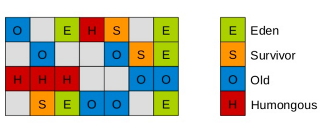
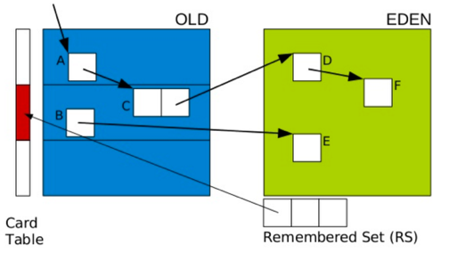
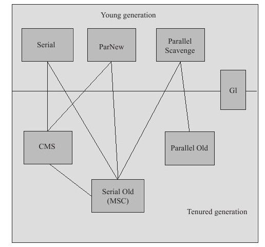

<!DOCTYPE html>
<html>
<head><meta name="generator" content="Hexo 3.8.0">
  <meta charset="utf-8">
  

  
  <title>Hexo</title>
  <meta name="viewport" content="width=device-width, initial-scale=1, maximum-scale=1">
  <meta property="og:type" content="website">
<meta property="og:title" content="Hexo">
<meta property="og:url" content="http://yoursite.com/blog/index.html">
<meta property="og:site_name" content="Hexo">
<meta property="og:locale" content="default">
<meta name="twitter:card" content="summary">
<meta name="twitter:title" content="Hexo">
  
    <link rel="alternate" href="/blog/atom.xml" title="Hexo" type="application/atom+xml">
  
  
    <link rel="icon" href="/favicon.png">
  
  
    <link href="//fonts.googleapis.com/css?family=Source+Code+Pro" rel="stylesheet" type="text/css">
  
  <link rel="stylesheet" href="/blog/css/style.css">
</head>
</html>
<body>
  <div id="container">
    <div id="wrap">
      <header id="header">
  <div id="banner"></div>
  <div id="header-outer" class="outer">
    <div id="header-title" class="inner">
      <h1 id="logo-wrap">
        <a href="/blog/" id="logo">Hexo</a>
      </h1>
      
    </div>
    <div id="header-inner" class="inner">
      <nav id="main-nav">
        <a id="main-nav-toggle" class="nav-icon"></a>
        
          <a class="main-nav-link" href="/blog/">Home</a>
        
          <a class="main-nav-link" href="/blog/archives">Archives</a>
        
      </nav>
      <nav id="sub-nav">
        
          <a id="nav-rss-link" class="nav-icon" href="/blog/atom.xml" title="RSS Feed"></a>
        
        <a id="nav-search-btn" class="nav-icon" title="Search"></a>
      </nav>
      <div id="search-form-wrap">
        <form action="//google.com/search" method="get" accept-charset="UTF-8" class="search-form"><input type="search" name="q" class="search-form-input" placeholder="Search"><button type="submit" class="search-form-submit">&#xF002;</button><input type="hidden" name="sitesearch" value="http://yoursite.com/blog"></form>
      </div>
    </div>
  </div>
</header>
      <div class="outer">
        <section id="main">
  
    <article id="post-G1学习" class="article article-type-post" itemscope itemprop="blogPost">
  <div class="article-meta">
    <a href="/blog/2019/04/21/G1学习/" class="article-date">
  <time datetime="2019-04-21T12:44:22.000Z" itemprop="datePublished">2019-04-21</time>
</a>
    
  </div>
  <div class="article-inner">
    
    
      <header class="article-header">
        
  
    <h1 itemprop="name">
      <a class="article-title" href="/blog/2019/04/21/G1学习/">G1学习</a>
    </h1>
  

      </header>
    
    <div class="article-entry" itemprop="articleBody">
      
        <p>之所以单独写一篇是觉得 深入理解JVM虚拟机这本书，对G1细节讲的太少，而且在网上查的资料看起来也很模糊，甚至很有误导性，所以整理了下，但说实话我还是没有理解这个G1完整的过程，将来还是需要慢慢理解整理。</p>
<h1 id="内存分配描述"><a href="#内存分配描述" class="headerlink" title="内存分配描述"></a>内存分配描述</h1><p>G1 的内存不再是像以前一样的连续的内存分布，而是非连续的内存分布<br><br>每一块是一个region，可以通过-XX:G1HeapRegionSize指定大小，只能是2的幂等次，<br>H表示的是巨型对象，巨型对象默认是分配在老年区，但是如果是短期的，那么会对老年区造成影响，所以G1划分了H区，如果一个H区放不下，那么会分配连续的空间存放</p>
<h1 id="GC-模式"><a href="#GC-模式" class="headerlink" title="GC 模式"></a>GC 模式</h1><p>共有三种GC模式:  </p>
<ol>
<li>young gc</li>
<li>mixed gc<br> 分为两个部分：  <ol>
<li>global concurrent marking </li>
<li>混合垃圾回收  <strong>STW</strong></li>
</ol>
</li>
<li>full gc  </li>
</ol>
<p>young gc一般是当所有的eden region都被耗尽，就触发一次young gc,执行完一次之后，对象被拷贝survivor 或者old </p>
<p>mixed gc 并不是一个old gc,这是重点， 他会回收整个的young，和部分的old,当老年代达到了内存的阙值时触发</p>
<h2 id="young-gc"><a href="#young-gc" class="headerlink" title="young gc"></a>young gc</h2><p>STW</p>
<p>阶段分为：  </p>
<ol>
<li>根扫描， 静态和本地对象被扫描  </li>
<li>更新RS， 处理dirty card队列更新RS </li>
<li>处理RS， 检测从年轻代指向年老代的对象</li>
<li>对象拷贝，复制到survivor 和old</li>
<li>处理引用队列，软引用，弱引用，虚引用处理</li>
</ol>
<p>其实不是很理解步骤2，3</p>
<p>这里思考一个问题，如果要只收集young, 但young 和old肯定是会有互相引用，难道要扫描全部内存？G1使用了remember set (rset) ,每个region有一个rset，记录谁引用了这块region（point-in）,这个概念在其他收集器中也有体现（资料说是CMS，但我觉得只要分代收集就要用这个），但在之前rset记录的是老年代引用了哪些新生代对象（point-out）,所以直接扫描这块，就不用扫描全部，  </p>
<p>在G1中使用的是ponit-in,记录的是谁引用了这块，因为分区太多，这个rset只记录年老代到新生代的引用，因为每次GC eden都被扫描，</p>
<p>这就又产生一个问题，一个region有很多对象，记录可能会很多 ，所以又产生一个概念，cardTable, 其实就是把一个分区划分为多个区域，rset只记录指向哪个区域，而不是精确到对象</p>
<p>  </p>
<h2 id="mixed-gc"><a href="#mixed-gc" class="headerlink" title="mixed gc"></a>mixed gc</h2><p>选定所有年轻代里的Region，外加根据global concurrent marking统计得出收集收益高的若干老年代Region。在用户指定的开销目标范围内尽可能选择收益高的老年代Region</p>
<p>分为两个步骤：</p>
<ol>
<li>全局并发标记（global concurrent marking）</li>
<li>混合垃圾回收</li>
</ol>
<p>global concurrent marking<strong>主要为mix gc提供标记服务</strong>，并不是必须环节，分为五个步骤：</p>
<ol>
<li>初始标记（initial mark，STW）<br>stop-the-world，它伴随着一次普通的 Young GC 发生，然后对 Survivor 区（root region）进行标记，因为该区可能存在对老年代的引用，因为 Young GC 是需要 stop-the-world 的，所以并发标记直接重用这个阶段</li>
<li>根区域扫描（root region scan）<br>扫描 Survivor 到老年代的引用，该阶段必须在下一次 Young GC 发生前结束  </li>
<li>并发标记（Concurrent Marking）<br>寻找整个堆的存活对象，该阶段可以被 Young GC 中断</li>
<li>最终标记（Remark，STW）<br>stop-the-world，完成最后的存活对象标记。使用了比 CMS 收集器更加高效的 snapshot-at-the-beginning (SATB) 算法</li>
<li>清除垃圾（Cleanup，STW）<br>清除空Region，<strong>即没有存活对象的region</strong>，所以这步不能看作mixgc的清理阶段</li>
</ol>
<p>并发标记结束后是混合垃圾回收周期，不仅进行年轻代垃圾收集，而且回收之前标记出来的老年代的垃圾最多的部分区块。</p>
<p>混合垃圾回收周期会持续进行，直到几乎所有的被标记出来的分区（垃圾占比大的分区）都得到回收，然后恢复到常规的年轻代垃圾收集，最终再次启动并发标记。</p>
<p>所以看起来young gc 和mix gc并不是互斥进行，可以说是同时在进行。</p>
<h2 id="full-gc"><a href="#full-gc" class="headerlink" title="full gc"></a>full gc</h2><p>什么情况会触发full gc（STW收集）：</p>
<ol>
<li>concurrent mode failure：并发模式失败，CMS 收集器也有同样的概念。G1 并发标记期间，如果在标记结束前，老年代被填满，G1 会放弃标记</li>
<li>晋升失败：并发周期结束后，是混合垃圾回收周期，伴随着年轻代垃圾收集，进行清理老年代空间，如果这个时候清理的速度小于消耗的速度，导致老年代不够用，那么会发生晋升失败</li>
<li>疏散失败：年轻代垃圾收集的时候，如果 Survivor 和 Old 区没有足够的空间容纳所有的存活对象。这种情况肯定是非常致命的，因为基本上已经没有多少空间可以用了，这个时候会触发 Full GC 也是很合理的。</li>
</ol>
<h2 id="三色标记法"><a href="#三色标记法" class="headerlink" title="三色标记法"></a>三色标记法</h2><p>TODO 待补全</p>
<h2 id="常用参数"><a href="#常用参数" class="headerlink" title="常用参数"></a>常用参数</h2><p>TODO 待补全</p>
<p>参考：</p>
<blockquote>
<p><a href="http://blog.jobbole.com/109170/" target="_blank" rel="noopener">http://blog.jobbole.com/109170/</a><br><a href="http://ifeve.com/%E6%B7%B1%E5%85%A5%E7%90%86%E8%A7%A3g1%E5%9E%83%E5%9C%BE%E6%94%B6%E9%9B%86%E5%99%A8/" target="_blank" rel="noopener">http://ifeve.com/%E6%B7%B1%E5%85%A5%E7%90%86%E8%A7%A3g1%E5%9E%83%E5%9C%BE%E6%94%B6%E9%9B%86%E5%99%A8/</a><br><a href="https://tech.meituan.com/2016/09/23/g1.html" target="_blank" rel="noopener">https://tech.meituan.com/2016/09/23/g1.html</a> 讲的最好<br><a href="https://juejin.im/entry/5af0832c51882567244deb44" target="_blank" rel="noopener">https://juejin.im/entry/5af0832c51882567244deb44</a></p>
</blockquote>

      
    </div>
    <footer class="article-footer">
      <a data-url="http://yoursite.com/blog/2019/04/21/G1学习/" data-id="cjuqxfubn0000zgp3qhbtxm3v" class="article-share-link">Share</a>
      
      
  <ul class="article-tag-list"><li class="article-tag-list-item"><a class="article-tag-list-link" href="/blog/tags/JVM/">JVM</a></li></ul>

    </footer>
  </div>
  
</article>


  
    <article id="post-垃圾回收器" class="article article-type-post" itemscope itemprop="blogPost">
  <div class="article-meta">
    <a href="/blog/2019/04/15/垃圾回收器/" class="article-date">
  <time datetime="2019-04-15T13:13:46.000Z" itemprop="datePublished">2019-04-15</time>
</a>
    
  </div>
  <div class="article-inner">
    
    
      <header class="article-header">
        
  
    <h1 itemprop="name">
      <a class="article-title" href="/blog/2019/04/15/垃圾回收器/">垃圾回收器</a>
    </h1>
  

      </header>
    
    <div class="article-entry" itemprop="articleBody">
      
        <h1 id="使用场景总览"><a href="#使用场景总览" class="headerlink" title="使用场景总览"></a>使用场景总览</h1><p></p>
<h1 id="serial-收集器"><a href="#serial-收集器" class="headerlink" title="serial 收集器"></a>serial 收集器</h1><ol start="0">
<li>可以使用在新生代</li>
<li>单线程</li>
<li>进行收集操作的时候 stop the world </li>
<li>使用<strong>复制算法</strong>  </li>
</ol>
<h1 id="serial-old"><a href="#serial-old" class="headerlink" title="serial_old"></a>serial_old</h1><ol start="0">
<li>老年代版本的serial 收集器</li>
<li>单线程 </li>
<li>使用<strong>标记-整理</strong>算法  </li>
<li>主要用途是在jdk1.5 之前parallel scavenge配合，还有作为CMS的后备收集器，在并发收集时发生concurrent Mode Failure时使用，</li>
</ol>
<h1 id="ParNew-收集器"><a href="#ParNew-收集器" class="headerlink" title="ParNew 收集器"></a>ParNew 收集器</h1><ol start="0">
<li>用在新生代，使用<strong>复制</strong>算法</li>
<li>serial的多线程版本，</li>
<li>新生代的首选，除了serial,只有他可以和CMS配合使用，实际上，在CMS作为老年代收集器后新生代只能选择serial和parNew</li>
<li>-XX：ParallelGCThreads可以限制回收的线程数</li>
</ol>
<h1 id="Parallel-Scavenge"><a href="#Parallel-Scavenge" class="headerlink" title="Parallel Scavenge"></a>Parallel Scavenge</h1><ol start="0">
<li>用在新生代，使用<strong>复制</strong>算法,使用多线程</li>
<li>别的收集器关注点在于降低STW的时间，而Parallel Scavenge关注的是吞吐量，吞吐量=运行用户代码时间/（用户代码时间+垃圾回收时间）</li>
<li>Parallel Scavenge收集器提供了两个参数用于精确控制吞吐量，分别是控制最大垃圾收集停顿时间的-XX：MaxGCPauseMillis参数以及直接设置吞吐量大小的-XX：GCTimeRatio参数。</li>
<li><strong>-XX：+UseAdaptiveSizePolicy</strong> 就不需要手工指定新生代的大小（-Xmn）、Eden与Survivor区的比例（-XX：SurvivorRatio）、晋升老年代对象年龄（-XX：PretenureSizeThreshold）等细节参数了，虚拟机会根据当前系统的运行情况收集性能监控信息，动态调整这些参数以提供最合适的停顿时间或者最大的吞吐量</li>
<li>无法与CMS配合使用，原因是Parallel Scavenge没有使用原本HotSpot其它GC通用的那个GC框架，所以不能跟使用了那个框架的CMS搭配使用</li>
</ol>
<h1 id="parallel-scavenge-old"><a href="#parallel-scavenge-old" class="headerlink" title="parallel scavenge old"></a>parallel scavenge old</h1><ol start="0">
<li>用在老年代，多线程，<strong>标记整理</strong>算法</li>
<li>在1.6后提供，在此之前都只能使用serial_old作为老年代来配合parallel scavenge，效率并不高</li>
</ol>
<h1 id="CMS"><a href="#CMS" class="headerlink" title="CMS"></a>CMS</h1><ol start="0">
<li>目的时减少停顿时间，用于老年区</li>
<li><blockquote>
<p>阶段包括：<br> 1.初始标记。标记下GC ROOT直接可达的对象，速度快<br> 2.并发标记。进行GC root trace<br> 3.重新标记. 是为了修正并发标记期间用户程序运行产生的垃圾变动，<br> 4.并发清除<br> 初始标记，重新标记仍然需要STW，</p>
</blockquote>
</li>
<li>缺点：  <ol>
<li>无法处理浮动垃圾，即在并发清除时产生的垃圾，出现concurrent mode failure,所以CMS需要给并发清除预留一部分内存，所以CMS不能像别的收集器一样满了之后才运行，而是在达到阙值后就启动，-XX：CMSInitiatingOccupancyFraction可以设置阙值  </li>
<li>由于基于标记清除算法，所以可能出现太多碎片，导致大的对象无法分配内存，为了处理这种情况，提供-XX：+UseCMSCompactAtFullCollection ，在每次FUll GC之前进行，碎片整理，和XX：CMSFullGCsBeforeCompaction，这个参数是用于设置执行多少次不压缩的Full GC后，跟着来一次带压缩的</li>
</ol>
</li>
</ol>
<h1 id="G1收集器"><a href="#G1收集器" class="headerlink" title="G1收集器"></a>G1收集器</h1><p>在内存上将内存分为大小相等的region，新生代和老年代都是一部分<strong>不需要连续的</strong>的region，G1 可以有计划的避免在整个堆中进行回收，而是维护一个优先队列，每次根据运行的时间，优先回收价值最大的region，  </p>
<p>这里作者提出一个问题：如果分为region，那么每个region里的对象肯定不是孤立的，而是互相有依赖，那么如果想回收新生代，岂不是也要扫描老年代？实际上G1和其他收集器在虚拟机中都是使用remembered set 来记录引用关系，如果虚拟机检测到对引用的修改，那么就立刻更新remembered set ,这样就可以保证不需要扫描全内存。</p>
<ol start="0">
<li>G1可以不需要其他收集器配合就能独立管理整个GC堆，但它能够采用不同的方式去处理新创建的对象和已经存活了一段时间、熬过多次GC的旧对象以获取更好的收集效果</li>
<li>G1从整体来看是基于<strong>标记—整理</strong>算法实现的收集器，从局部（两个Region之间）上来看是基于<strong>复制</strong>算法实现的，但无论如何，这两种算法都意味着G1运作期间不会产生内存空间碎片</li>
<li>停顿时间可预测，能让使用者明确指定在一个长度为M毫秒的时间片段内，消耗在垃圾收集上的时间不得超过N毫秒 ， </li>
<li><p>操作主要包括：<br> 1.初始标记，标记GC root直接可达的对象，并改变next top at mark start,STW，时间很短<br> 2.并发标记，进行可达性分析，将引用的变化情况记录在remembered set log<br> 3.最终标记，将remember set log 和remember set合并，STW<br> 4.筛选回收，也可以停顿也可以并行，主要对region回收价值排序，并在用户指定的停顿时间来制定回收计划  </p>
</li>
<li><p>相对于CMS，碎片更少空间利用更高，停顿时间可控，</p>
</li>
</ol>
<h1 id="关于吞吐率和停顿时间"><a href="#关于吞吐率和停顿时间" class="headerlink" title="关于吞吐率和停顿时间　　"></a>关于吞吐率和停顿时间　　</h1><p>停顿时间越短就越适合需要与用户交互的程序，良好的响应速度能提升用户体验，而高吞吐量则可以高效率地利用CPU时间，尽快完成程序的运算任务，主要适合在后台运算而不需要太多交互的任务,<br>看到parallel scavenge 注重的时吞吐率，而其他收集器注重停顿时间，觉得这两个不应该是同一种东西吗，减少了停顿时间不就提高了吞吐率吗，但这俩个应该算是两个维度，GC的时间应该是停顿时间的超集。</p>

      
    </div>
    <footer class="article-footer">
      <a data-url="http://yoursite.com/blog/2019/04/15/垃圾回收器/" data-id="cjuqxfuby0001zgp3nne25ump" class="article-share-link">Share</a>
      
      
  <ul class="article-tag-list"><li class="article-tag-list-item"><a class="article-tag-list-link" href="/blog/tags/JVM/">JVM</a></li></ul>

    </footer>
  </div>
  
</article>


  
    <article id="post-判断对象已死-垃圾回收算法-hotspot实现" class="article article-type-post" itemscope itemprop="blogPost">
  <div class="article-meta">
    <a href="/blog/2019/04/15/判断对象已死-垃圾回收算法-hotspot实现/" class="article-date">
  <time datetime="2019-04-15T13:13:46.000Z" itemprop="datePublished">2019-04-15</time>
</a>
    
  </div>
  <div class="article-inner">
    
    
      <header class="article-header">
        
  
    <h1 itemprop="name">
      <a class="article-title" href="/blog/2019/04/15/判断对象已死-垃圾回收算法-hotspot实现/">判断对象已死-垃圾回收算法-hotspot实现</a>
    </h1>
  

      </header>
    
    <div class="article-entry" itemprop="articleBody">
      
        <h1 id="判断对象已死"><a href="#判断对象已死" class="headerlink" title="判断对象已死"></a>判断对象已死</h1><h2 id="引用计数法"><a href="#引用计数法" class="headerlink" title="引用计数法"></a>引用计数法</h2><p>缺点：无法判断循环引用</p>
<h2 id="可达性分析"><a href="#可达性分析" class="headerlink" title="可达性分析"></a>可达性分析</h2><p>定义：称为<strong>GC Roots</strong>的对象作为起始点，从这些节点开始向下搜索，搜索所走过的路径称为引用链（Reference Chain），当一个对象到GC Roots没有任何引用链相连（用图论的话来说，就是从GC Roots到这个对象不可达）时，则证明此对象是不可用的</p>
<p>GC roots:</p>
<ul>
<li>虚拟机栈（栈帧中的本地变量表）中引用的对象。</li>
<li>方法区中类静态属性引用的对象。</li>
<li>方法区中常量引用的对象。</li>
<li>本地方法栈中JNI（即一般说的Native方法）引用的对象。</li>
</ul>
<h2 id="关于引用"><a href="#关于引用" class="headerlink" title="关于引用"></a>关于引用</h2><p>在jdk1.2 之前，对引用的概念太过于狭窄，我们希望描述一种类型：当内存足够时可以保留，当内存不够时可以抛弃，</p>
<p>jdk1.2之后通过扩展，有了：</p>
<ul>
<li>强引用<blockquote>
<p>正常使用的引用，只要引用还在就永远不会回收</p>
</blockquote>
</li>
<li>软引用<blockquote>
<p>软引用描述<strong>还有用但并非必须的对象</strong>，在<strong>即将抛出OOM</strong>之前进行回收，如果回收之后还无法获得足够的空间就OOM,提供了softReference来实现软引用</p>
</blockquote>
</li>
<li>弱引用<blockquote>
<p>被弱引用关联的对象只存活到下一次GC就会被回收，提供weakReference来实现</p>
</blockquote>
</li>
<li>弱引用<blockquote>
<p>最弱的一种引用关系。一个对象是否有虚引用的存在，完全不会对其生存时间构成影响，也无法通过虚引用来取得一个对象实例。为一个对象设置虚引用关联的唯一目的就是能在这个对象被收集器回收时收到一个系统通知,提供PhantomReference来实现。</p>
</blockquote>
</li>
</ul>
<h2 id="finalize"><a href="#finalize" class="headerlink" title="finalize"></a>finalize</h2><p>当一个对象被可达性分析判断可以GC，那么将会被标记，如果该对象覆盖了finalize方法，那么将会把对象放在F-queue队列，等待一个低优先级的Finalize线程来执行finalize方法，但注意如果对象的finalize方法中又使得对象和应用链中的对象重新建立了联系，<br>注意的点：</p>
<ol>
<li>这是因为任何一个对象的finalize（）方法都只会被系统自动调用一次，如果对象面临下一次回收，它的finalize（）方法不会被再次执行</li>
<li>finalize方法的用途是为了处理<strong>关闭外部资源</strong>，所以大多数情况并不需要主要这个方法</li>
</ol>
<h2 id="永久区（方法区）对象判断"><a href="#永久区（方法区）对象判断" class="headerlink" title="永久区（方法区）对象判断"></a>永久区（方法区）对象判断</h2><p>方法区的回收主要是常量和类对象的回收，判断常量是否可回收，是检测是否还有对象引用常量，而判断类的可回收，条件如下</p>
<ol>
<li>该类的所有对象都被回收。</li>
<li>加载该类的classLoardor被回收</li>
<li>该类的class对象没有被引用<blockquote>
<p>HotSpot虚拟机提供了-Xnoclassgc参数进行控制，还可以使用-verbose：class以及-XX：+TraceClassLoading、-XX：+TraceClassUnLoading查看类加载和卸载信息，其中-verbose：class和-XX：+TraceClassLoading可以在Product版的虚拟机中使用，-XX：+TraceClassUnLoading参数需要FastDebug版的虚拟机支持</p>
</blockquote>
</li>
</ol>
<p>对于大量使用classLoader ，如反射，cglib的框架，都需要设定这个参数来保证永久区不会溢出（这让我回想起曾经的热加载）</p>
<h1 id="垃圾回收算法"><a href="#垃圾回收算法" class="headerlink" title="垃圾回收算法"></a>垃圾回收算法</h1><h2 id="标记清除"><a href="#标记清除" class="headerlink" title="标记清除"></a>标记清除</h2><p>是最基础的回收算法，别的很多算法都基于这个思想，分为两个阶段，标记-清除，具体过程是标记后统一清除。<br>缺点：</p>
<ol>
<li>效率不高</li>
<li>空间问题，如果没有整理，会产生大量的空间碎片，影响到分配大对象</li>
</ol>
<h2 id="复制算法"><a href="#复制算法" class="headerlink" title="复制算法"></a>复制算法</h2><p>为了解决<strong>效率问题和碎片问题</strong>，将内存分为两个部分，每次new对象只放在一边，满了之后将还存活的对象复制到另一边，再清理掉旧的一边的内存，解决了<strong>碎片</strong>问题。现代垃圾回收采用这种算法来处理<strong>新生代</strong>区域内存。</p>
<p>原因是：新生代的内存<strong>朝生夕死</strong>，意味着它的存活很短，大部分对象都是需要被gc的，所以并不需要1：1的方式划分新生代，</p>
<blockquote>
<p>而是将内存分为一块较大的Eden空间和两块较小的Survivor空间，每次使用Eden和其中一块Survivor。当回收时，将Eden和Survivor中还存活着的对象一次性地复制到另外一块Survivor空间上，最后清理掉Eden和刚才用过的Survivor空间。HotSpot虚拟机默认Eden和Survivor的大小比例是<strong>8:1</strong>，也就是每次新生代中可用内存空间为整个新生代容量的90%（80%+10%），只有10%的内存会被“浪费”</p>
</blockquote>
<h2 id="标记整理算法"><a href="#标记整理算法" class="headerlink" title="标记整理算法"></a>标记整理算法</h2><p>对于老年代，对象存活时间长，如果不想浪费50%的空间，就需要有额外的空间进行分配担保，以应对被使用的内存中所有对象都100%存活的极端情况，所以在老年代一般不能直接选用这种算法</p>
<blockquote>
<p>分配担保指的是复制算法中如果一边内存的对象被复制去另一边的时候发现另一边空间不够，就需要有另一块内存来保证可以被使用，</p>
</blockquote>
<p>所以提出标记整理算法，过程是先标记，然后让所有存活的对象都像另一端移动，然后清理掉端边界以外的内存，</p>
<h2 id="分代回收"><a href="#分代回收" class="headerlink" title="分代回收"></a>分代回收</h2><p>根据对象的存活周期将内存划分为不同区域（新生代，老年代），对不同的区域采用不同的回收算法</p>
<p>对于新生代，对象存活时间短，所以可以使用复制算法，而对于老年代，存活时间长，可以使用标记清除或者标记整理算法。</p>
<h1 id="Hotspot的实现"><a href="#Hotspot的实现" class="headerlink" title="Hotspot的实现"></a>Hotspot的实现</h1><h2 id="枚举根节点"><a href="#枚举根节点" class="headerlink" title="枚举根节点"></a>枚举根节点</h2><p>可达性分析的难点：</p>
<ul>
<li>目前方法区的范围太大，检查引用会消耗太大的时间</li>
<li>因为并发，导致检查这个步骤必须stop the world </li>
</ul>
<p>hotspot的实现上，使用准确式GC，即JVM知道内存当中某位置存放什么样的数据，使用oopMap(ordinary Object Pointer Map)普通对象指明Map,在类加载完成之后，JVM 就记录了这个对象实例的多少偏移量存放的是什么类型数据，这样GC的时候就可以直接使用oopMap 来得到引用信息。</p>
<h2 id="安全点"><a href="#安全点" class="headerlink" title="安全点"></a>安全点</h2><p>维护oopMap 非常困难（因为并发，而且改变引用是很容易的事），所以hotspot 使用了安全点的概念，安全点可以抽象的看作当前系统运行的一个时间点，在这个时间点进行oopMap 更新和GC，安全点的选择是<strong>是否具有让程序长时间执行的特征</strong>为标准选择</p>
<blockquote>
<p>因为每条指令执行的时间都非常短暂，程序不太可能因为指令流长度太长这个原因而过长时间运行，“长时间执行”的最明显特征就是指令序列复用，例如方法调用、循环跳转、异常跳转等，所以具有这些功能的指令才会产生Safepoint</p>
</blockquote>
<p>这就产生一个问题，在进行GC时会stop the world 来进行可达性分析，那么现在使用了安全点来标记gc的时间点，所以就需要所有线程在进行gc前跑到安全点上（但是否是”所有”线程），有两种方案：</p>
<ul>
<li>抢先式中断</li>
<li>主动式中断</li>
</ul>
<p>抢先式中断<strong>在GC发生时</strong>把所有线程中断，如果发现有线程中断的地方不在安全点，就激活线程，这种方式几乎没有虚拟机使用</p>
<p>主动式中断是当需要GC的时候，不主动中断线程，而是设置标志位，线程轮询标准位来判断是否挂起，而轮询的位置就是安全点位置，和分配对象内存的位置，</p>
<h2 id="安全区域"><a href="#安全区域" class="headerlink" title="安全区域"></a>安全区域</h2><p>安全点没办法解决<strong>当程序</strong>不分配CPU的时候，即程序sleep或blocked的时候，这时无法到达安全点和响应<strong>中断</strong>，就需要安全区域的概念</p>
<p>简单描述就是在一段代码中，引用关系不变的话，就属于safe region ，在这个区域中进行GC都是可以的，线程会标识自己进入safe region ,这样当进行GC的时候，就不用管这些线程了</p>

      
    </div>
    <footer class="article-footer">
      <a data-url="http://yoursite.com/blog/2019/04/15/判断对象已死-垃圾回收算法-hotspot实现/" data-id="cjuqxfuco0006zgp3s73r1d2b" class="article-share-link">Share</a>
      
      
  <ul class="article-tag-list"><li class="article-tag-list-item"><a class="article-tag-list-link" href="/blog/tags/JVM/">JVM</a></li></ul>

    </footer>
  </div>
  
</article>


  


</section>
        
          <aside id="sidebar">
  
    

  
    
  <div class="widget-wrap">
    <h3 class="widget-title">Tags</h3>
    <div class="widget">
      <ul class="tag-list"><li class="tag-list-item"><a class="tag-list-link" href="/blog/tags/JVM/">JVM</a></li></ul>
    </div>
  </div>


  
    
  <div class="widget-wrap">
    <h3 class="widget-title">Tag Cloud</h3>
    <div class="widget tagcloud">
      <a href="/blog/tags/JVM/" style="font-size: 10px;">JVM</a>
    </div>
  </div>

  
    
  <div class="widget-wrap">
    <h3 class="widget-title">Archives</h3>
    <div class="widget">
      <ul class="archive-list"><li class="archive-list-item"><a class="archive-list-link" href="/blog/archives/2019/04/">April 2019</a></li></ul>
    </div>
  </div>


  
    
  <div class="widget-wrap">
    <h3 class="widget-title">Recent Posts</h3>
    <div class="widget">
      <ul>
        
          <li>
            <a href="/blog/2019/04/21/G1学习/">G1学习</a>
          </li>
        
          <li>
            <a href="/blog/2019/04/15/垃圾回收器/">垃圾回收器</a>
          </li>
        
          <li>
            <a href="/blog/2019/04/15/判断对象已死-垃圾回收算法-hotspot实现/">判断对象已死-垃圾回收算法-hotspot实现</a>
          </li>
        
      </ul>
    </div>
  </div>

  
</aside>
        
      </div>
      <footer id="footer">
  
  <div class="outer">
    <div id="footer-info" class="inner">
      &copy; 2019 John Doe<br>
      Powered by <a href="http://hexo.io/" target="_blank">Hexo</a>
    </div>
  </div>
</footer>
    </div>
    <nav id="mobile-nav">
  
    <a href="/blog/" class="mobile-nav-link">Home</a>
  
    <a href="/blog/archives" class="mobile-nav-link">Archives</a>
  
</nav>
    

<script src="//ajax.googleapis.com/ajax/libs/jquery/2.0.3/jquery.min.js"></script>


  <link rel="stylesheet" href="/blog/fancybox/jquery.fancybox.css">
  <script src="/blog/fancybox/jquery.fancybox.pack.js"></script>


<script src="/blog/js/script.js"></script>


  </div>
</body>
</html>